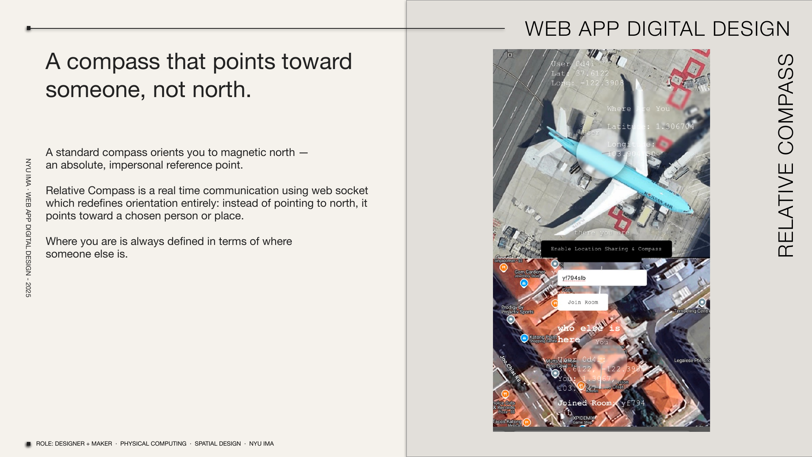

relative compass
A compass that points toward someone, not north. A standard compass orients you to magnetic north — an absolute, impersonal reference point. Relative Compass is a real time communication tool using WebSocket which redefines orientation entirely: instead of pointing to north, it points toward a chosen person or place. Where you are is always defined in terms of where someone else is.
Stack: WebSocket · Web Geolocation API · Canvas · Node.js
Role: designer + maker · physical computing · spatial design
NYU IMA, 2024–2025.